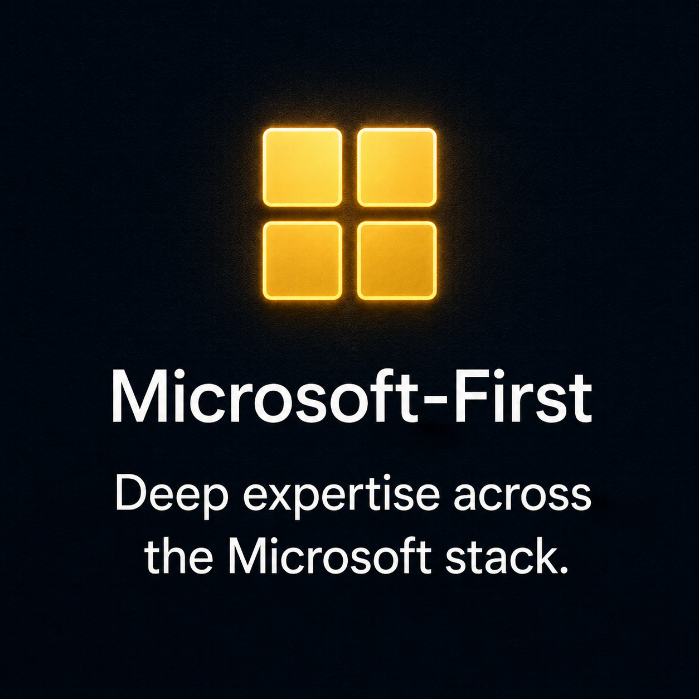
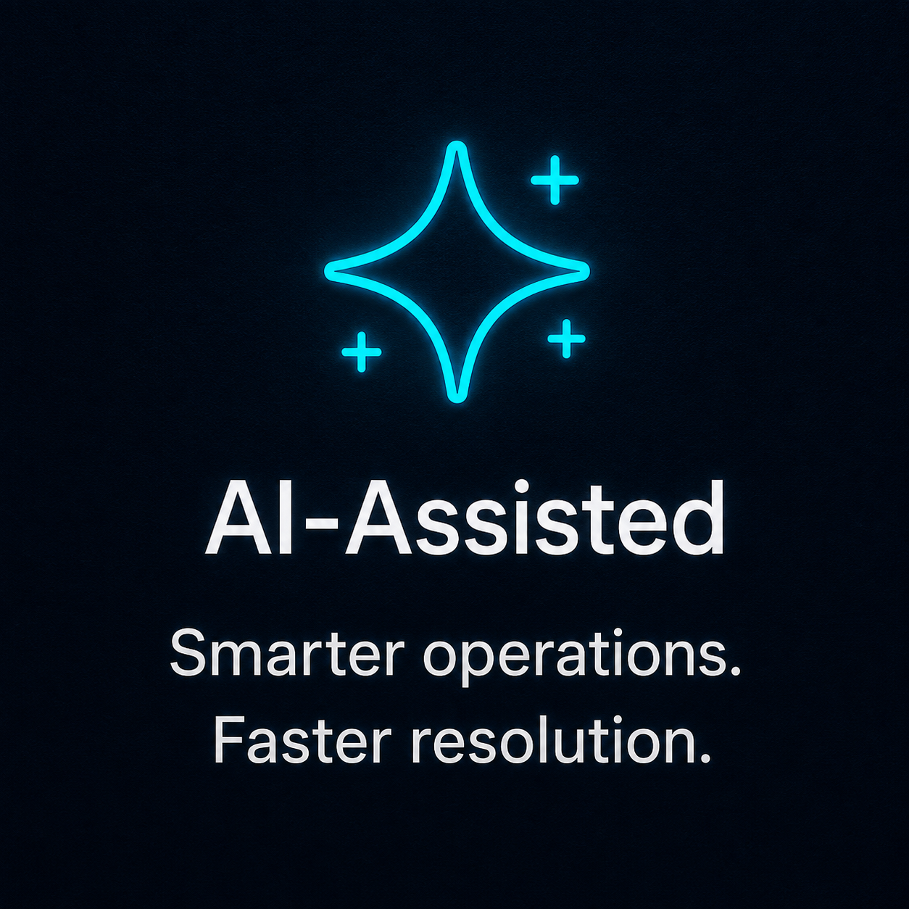
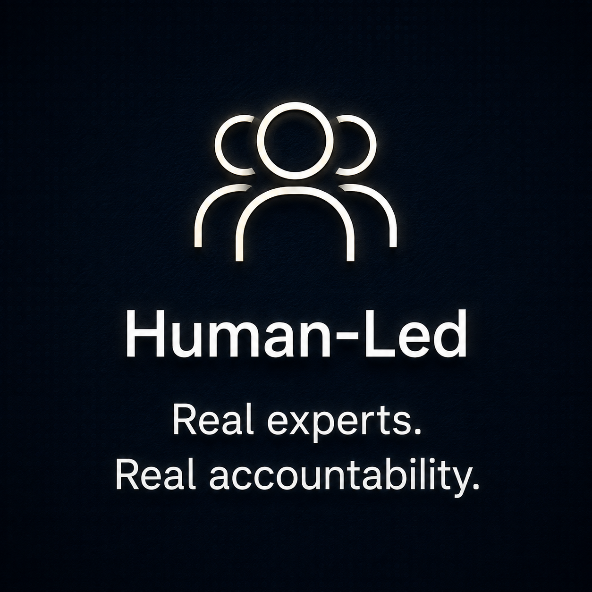
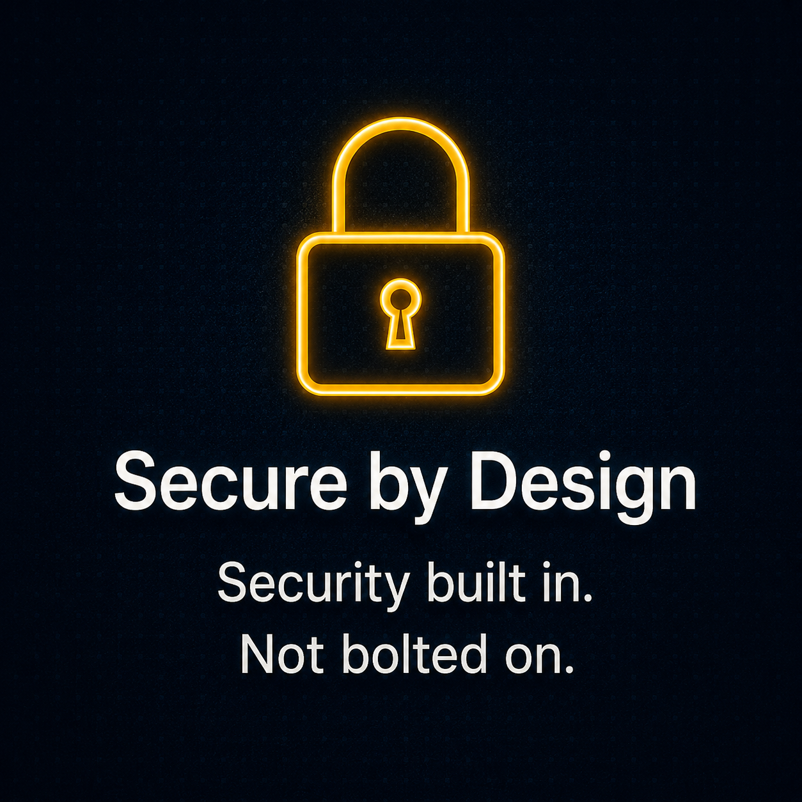
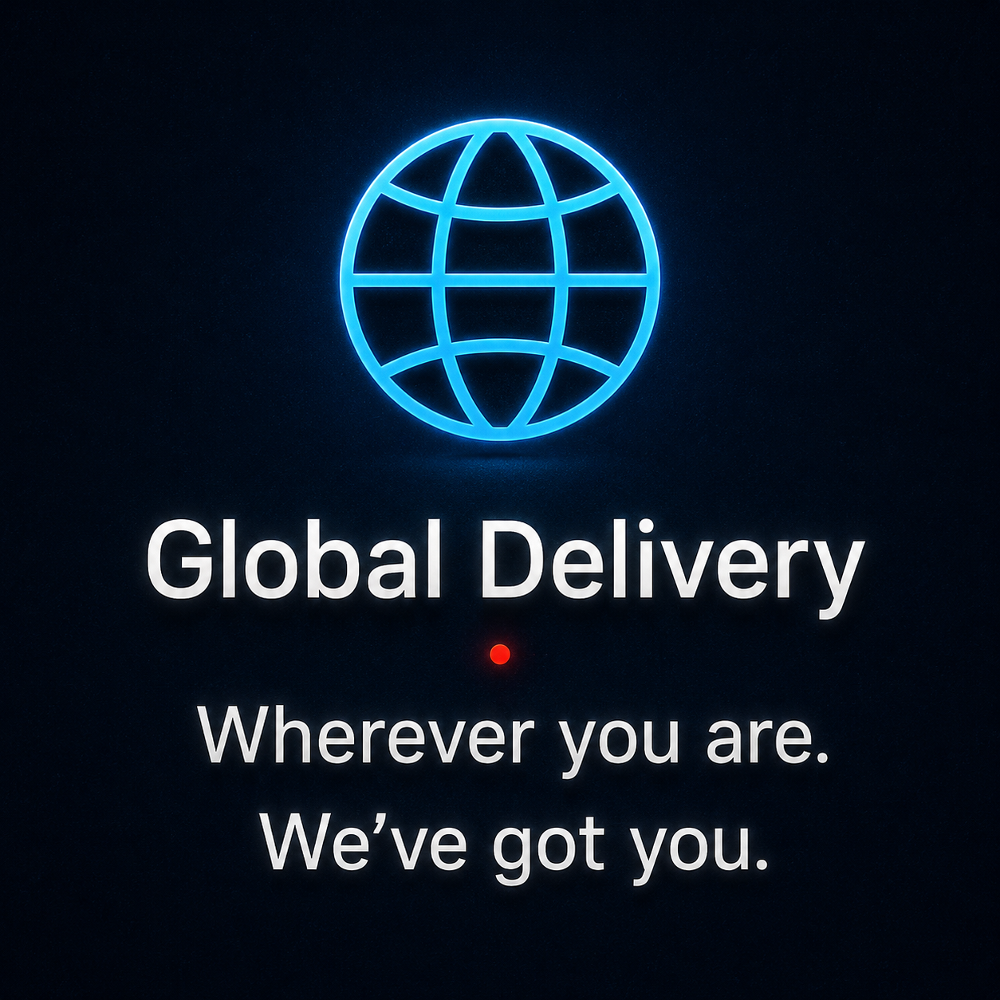
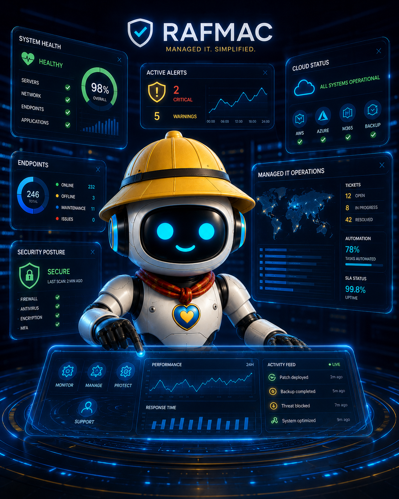
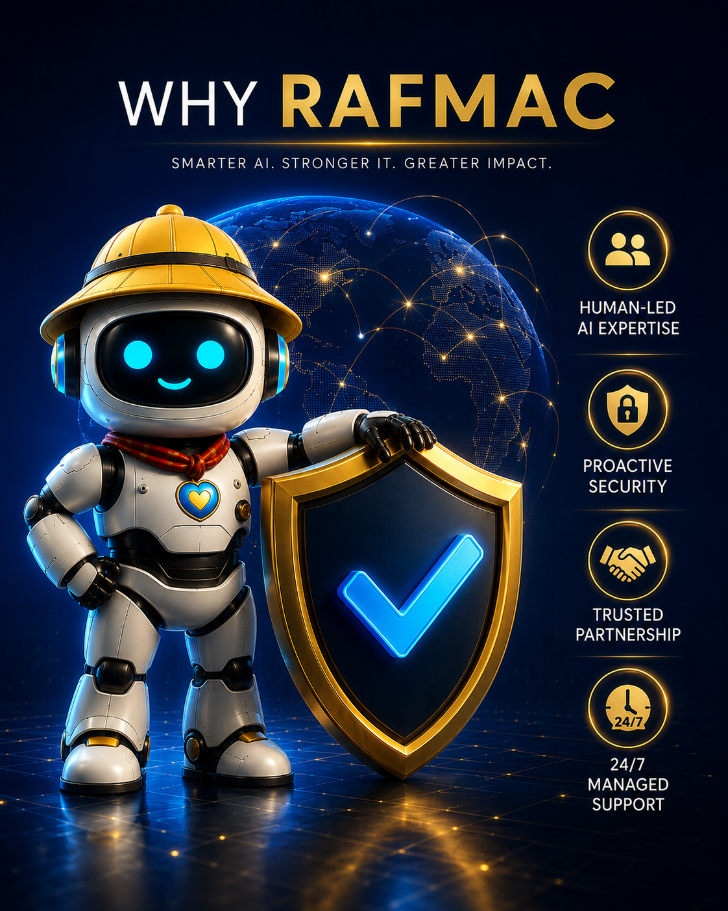

Microsoft 365 security gaps
Weak configurations and missed settings leave real openings — the kind attackers look for first.
Configuration · Hardening
RAFMAC manages and secures your Microsoft environment with AI-assisted monitoring and real engineering judgment. Nothing sensitive moves without a person approving it.
Continuous Microsoft IT operations without dashboard overload. Choose an area to see what RAFMAC watches, protects and improves behind the scenes.
Most of these build up quietly, one small gap at a time, until something forces the issue. RAFMAC exists to catch them first.
Weak configurations and missed settings leave real openings — the kind attackers look for first.
Support that changes hands constantly means nobody actually knows your environment.
Former employees, excess permissions and no MFA remain common causes of avoidable security exposure.
Laptops and phones nobody's tracking are laptops and phones nobody's protecting.
Cloud spend creeps up while security configuration quietly drifts out of shape.
You can't fix what you can't see — and many small businesses see too little, too late.
Every action falls into one of three tiers — so you know what is automatic, what is recommended and what always waits for human approval.
Monitoring, reporting and ticket triage within approved boundaries.
Restarts, provisioning and configuration changes can be drafted for review.
Security policy, privileged access and production-impacting decisions stay human-controlled.
Microsoft expertise, safe use of AI, accountable engineering, security by design and remote delivery built for modern teams.





A quick message opens a ticket — no forms, no phone tree.
Cross-referenced against the documented setup to find what changed.
A misconfigured mail-flow rule is identified and held for sign-off.
The change is completed with a plain-English summary of what happened.

This walkthrough illustrates the operating model. Real client case studies can replace this example as the customer base grows.

Estong helps watch, summarize and surface issues. Sensitive or privileged changes remain under human judgment.
RAFMAC brings Microsoft cloud engineering, security-first operations and carefully governed AI assistance together in one accountable service — so your business gets fewer handoffs, better context and clearer ownership.
The 365 Health Check is a free, no-obligation review of your Microsoft 365 and security posture — the same review we'd run before proposing any managed service.
A short conversation is enough to see whether RAFMAC is a fit for your Microsoft environment.
Talk to RAFMAC